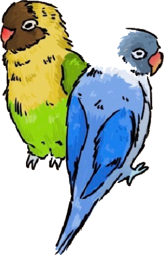
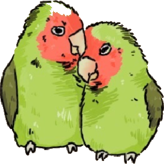
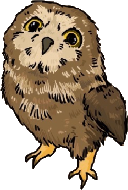
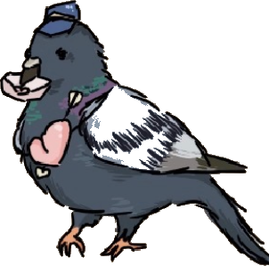

a quiet little experiment
The Shy Library
Some readers need a gentler invitation.





The room is listening
Try a book. Quiet hands help.
a quiet little experiment
Some readers need a gentler invitation.




Try a book. Quiet hands help.